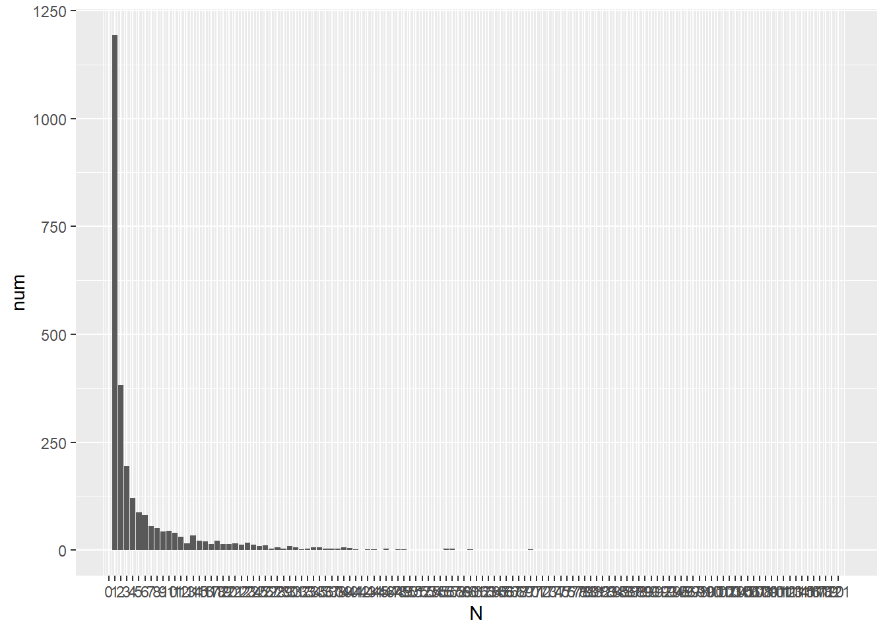
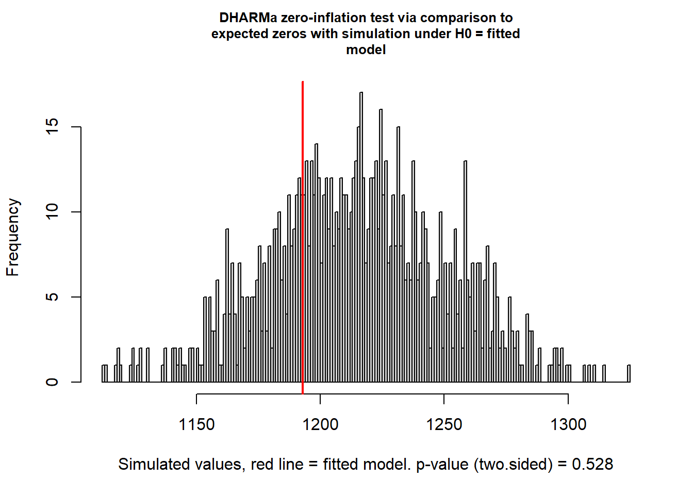
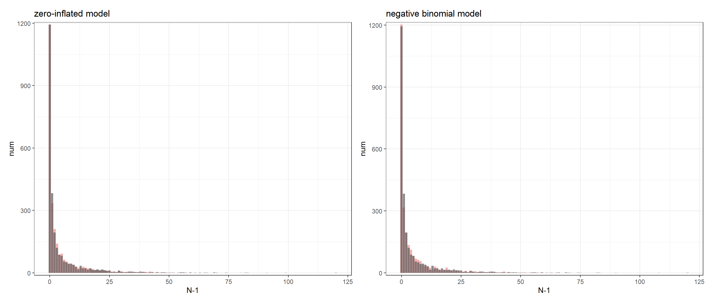

4 休息は何分連続で行われる?
ニホンザルは、移動の間に数十秒程度の短い休息をとることがよくある。こうした短時間の休息を統計的に除くことはできるだろうか？
ここでは、ゼロ過剰モデルを用いることで一時的な休息とそれ以外の休息を区別できるのかを検討する。
4.1 データの加工
個体追跡データから、地上での休息が何回連続で起こっているのかを計算する。
focal_raw %>%
mutate(RG = ifelse(activity %in% c("R","G") & T_G == "G",1,0)) %>%
group_by(no_focal, date, study_period, subject) %>%
summarise(N = rle(RG)$lengths,
RG = rle(RG)$values) %>%
filter(RG == "1") %>%
mutate(N_minus = N-1) %>%
ungroup()-> N_suc連続した回数ごとの度数を示したのが以下の図である(図4.1)。
N_suc %>%
group_by(N) %>%
summarise(num = n()) %>%
ggplot(aes(x = N, y = num))+
geom_col()+
scale_x_continuous(breaks = seq(0,121,1))

図4.1: 地上での休息が何回連続で続いたか
4.2 分析
4.2.1 モデリング
以下では、一時的な休息がそうでない休息に混ざっていると仮定するゼロ過剰モデルと、そうではないモデルをデータに適用する。なお、ゼロ過剰モデルを適用するため、休息の連続回数から1を引く。
いずれのモデルにも負の二項分布を適用した。ゼロ過剰モデルについては、こちらを参照。
## ゼロ過剰モデル
m_rgsuc_zi <- brm(bf(N_minus ~ study_period + (1|subject),
zi ~ 1 + (1|subject)),
family = zero_inflated_negbinomial(),
iter = 5000, warmup = 2500, seed = 13,
control=list(adapt_delta = 0.999, max_treedepth = 15),
backend = "cmdstanr",
data = N_suc,
file = "model/m_rgsuc_zi.rds")
m_rgsuc_nb <- brm(N_minus ~ study_period + (1|subject),
family = negbinomial,
iter = 5000, warmup = 2500, seed = 13,
control=list(adapt_delta = 0.999, max_treedepth = 15),
backend = "cmdstanr",
data = N_suc,
file = "model/m_rgsuc_nb.rds")4.2.1.1 モデルチェック
負の二項分布でもゼロ過剰にはなっていなかった。つまり、ゼロ過剰モデルを仮定しなくてもデータの0の多さを説明できているということである。

##
## DHARMa zero-inflation test via comparison to expected zeros with
## simulation under H0 = fitted model
##
## data: simulationOutput
## ratioObsSim = 0.98146, p-value = 0.528
## alternative hypothesis: two.sided4.2.2 モデル比較
それでは、どちらのモデルの予測性がより優れているかをモデル比較で検討する。モデル比較にはWAICを用いている。
loo_rgsuc_zi <- add_criterion(m_rgsuc_zi, criterion = "waic")
loo_rgsuc_nb <- add_criterion(m_rgsuc_nb, criterion = "waic")
loo_comp <- loo_compare(loo_rgsuc_zi, loo_rgsuc_nb, criterion = "waic")モデル比較の観点からも、ゼロ過剰モデルよりも負の二項分布モデルの方が予測がうまくできることが分かった。
## elpd_diff se_diff elpd_waic se_elpd_waic p_waic se_p_waic waic
## loo_rgsuc_nb 0.0 0.0 -6253.1 90.3 14.7 1.4 12506.2
## loo_rgsuc_zi -1.0 0.5 -6254.1 90.3 15.9 1.4 12508.3
## se_waic
## loo_rgsuc_nb 180.5
## loo_rgsuc_zi 180.54.2.3 モデルからの予測値と実データの比較。
set.seed(123)
coef(m_rgsuc_zi) %>%
data.frame() %>%
select(1,5,9,13,17) %>%
rename(In = 1, ziIn = 2, m19 = 3, m20 = 4, m21 = 5) %>%
bind_cols(data.frame(m18 = rep(0,18))) %>%
rownames_to_column(var = "subject") %>%
pivot_longer(m19:m18, values_to = "coef", names_to = "study_period") -> coef_zi
N_suc %>%
select(subject, study_period) %>%
left_join(coef_zi, by = c("subject", "study_period")) %>%
mutate(prob = inv_logit_scaled(ziIn)) %>%
mutate(onezero = ifelse(rbernoulli(nrow(N_suc),prob),0,1)) %>%
mutate(mu = exp(In + coef)) %>%
mutate(N = onezero*rnbinom(nrow(N_suc), mu = exp(In + coef),size = posterior_summary(m_rgsuc_zi)[8,1])) %>%
ggplot(aes(x = N ))+
geom_histogram(binwidth = 1,
fill = "red3",
alpha = 0.3)+
geom_col(data = N_suc %>%
group_by(N_minus) %>%
summarise(num = n()),
aes(x = N_minus, y = num),
alpha = 0.7) +
theme_bw()+
scale_y_continuous(expand= c(0.01,0))+
theme(aspect.ratio = 0.8)+
labs(title = "zero-inflated model",
x = "N-1") -> p_ziset.seed(123)
coef(m_rgsuc_nb) %>%
data.frame() %>%
select(1,5,9,13) %>%
rename(In = 1, m19 = 2, m20 = 3, m21 = 4) %>%
bind_cols(data.frame(m18 = rep(0,18))) %>%
rownames_to_column(var = "subject") %>%
pivot_longer(m19:m18, values_to = "coef", names_to = "study_period")-> coef_nb
N_suc %>%
select(subject, study_period) %>%
left_join(coef_nb, by = c("subject", "study_period")) %>%
mutate(N = rnbinom(nrow(N_suc), mu = exp(In + coef), size = posterior_summary(m_rgsuc_nb)[6,1])) %>%
ggplot(aes(x = N )) +
geom_histogram(binwidth = 1,
fill = "red3",
alpha = 0.3)+
geom_col(data = N_suc %>%
group_by(N_minus) %>%
summarise(num = n()),
aes(x = N_minus, y = num),
alpha = 0.7)+
theme_bw()+
scale_y_continuous(expand= c(0.01,0))+
theme(aspect.ratio = 0.8)+
labs(title = "negative binomial model",
x = "N-1") -> p_nb各モデルから予測された値の分布と、実データの分布を比較したのが図4.2である。灰色バーが実データで、赤いバーがモデルから予測された値である。
グラフを見ると、ゼロ過剰モデルを用いなくてもモデルからの予測値が実データとうまくマッチしていることが分かる。つまり、このアプローチでは短時間の休息とそのほかの休息を区別することはできなかった。

図4.2: 実データと各モデルの予測値の比較